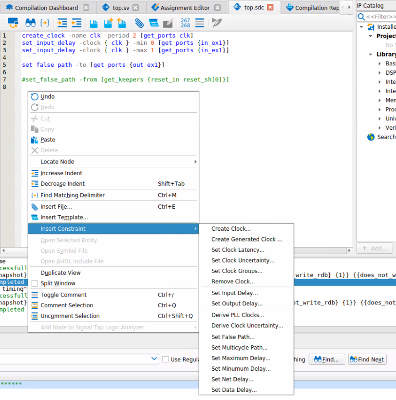

preserve, noprune or keep to
ensure a named node that you are attaching a constraint to is
retainedAs the fitter works on heuristics, a decision at placement may not be optimal and we may be able to see how to improve results on the finalised design.
Old way (before Stratix 10 / Agilex)Use
$::TimingAnalyzerInfo(nameofexecutable) to define
constraints that are not evaluated for sign-off
set_max_delay to encourage the fitter to place
registers near to each other
# Example Fitter overconstraint targeting specific nodes
if { $::TimingAnalyzerInfo(nameofexecutable) eq "quartus_fit"} {
set_max_delay -from ${my_src_regs} -to ${my_dst_regs} 1ns
}For hyperflex devices (Agilex, Stratix 10)
use [is_post_route] to affect placement but
not retiming.
# Example Fitter overconstraint targeting specific nodes (allows for post-route retiming)
if { ! [is_post_route]} {
set_max_delay -from ${my_src_regs} -to ${my_dst_regs} 1ns
}If using a separate file add the
-read_during_post_syn_and_not_post_fit_timing_analysis in
your .qsf file
set_global_assignment -name SDC_ENTITY_FILE <file>.sdc -entity <name> -read_during_post_syn_and_not_post_fit_timing_analysis
set_multicycle_path
set_clock_groups may be used to
remove analysis between defined groups of clocks - but beware to check
that all transfers really are protected.dni_synthesize)Report Clocks,
Report SDCset_input_delay and
set_output_delay
dni_synthesize)Report Unconstrained Pathsset_false_path as the transfer is double
registeredset_max_skew to ensure skew is < clk periodset_max_delay and set_min_delay to large
values to effectively make skew the only constraintenum types for state machines can separate intent
from implementation and subsequently make changing encoding style
easiersyn_encoding attribute to control
encoding as control how the FSM is encoded in hardware
sequential - binarysafe - one-hot with protection logic - use if your
state machine may enter invalid states (eg async reset)one-hot - each state represented by one bit (two
changes between any state)gray - adjacent states differ by one bit, can represent
2^M statescompact - least bits to represent statejohnson - adjacent states differ by one bit, can
represent 2*M states, less logic than grayset_global_assignment -name SAFE_STATE_MACHINE can
be set to AUTO | ALWAYS | NEVERSAFE_STATE_MACHINE assignment is still overridden
by rtl attributesBy default, the software will convert shift register structures to a RAM structure (utilizing MLAB)
Can be disabled globally or on a per instance basis
set_global_assignment -name auto_shift_register_recognition off
set_instance_assignment -name auto_shift_register_recognition off -to fooCan constrain performance
Conversion reduces logic utilization